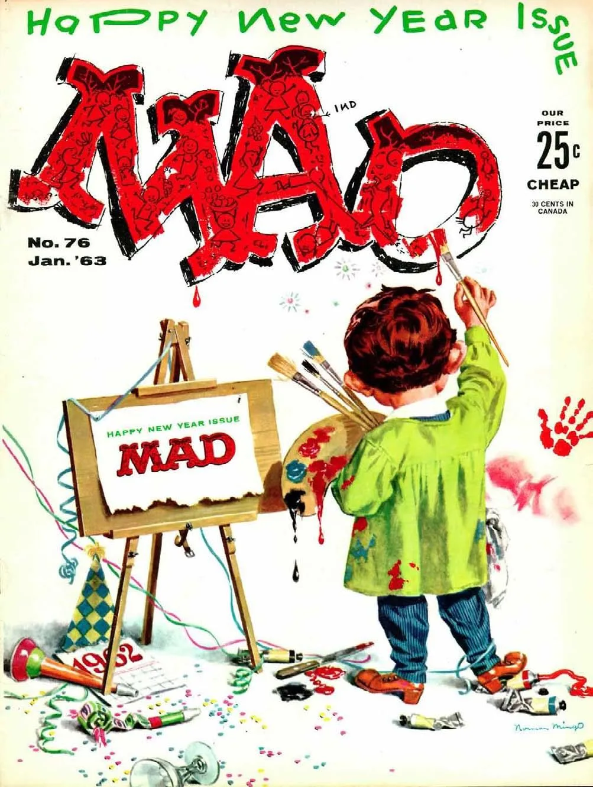

BANCA ATEMPORAL
☰
Início
Acervo
Coleção
Leitor
Linha do Tempo
Multimídia
Newsletter
Contato
Sobre
Referências
Archive.org ↗
← Voltar ao Acervo
Alternar Tamanho da Fonte (A+)

← Anterior
Página 1
Próxima →
Carregando edição...
Som ambiente de leitura:
Seu navegador não reproduz áudios.
Dica: Clique em "Ler Edição" em qualquer revista do Acervo para abrir a ficha correspondente aqui.